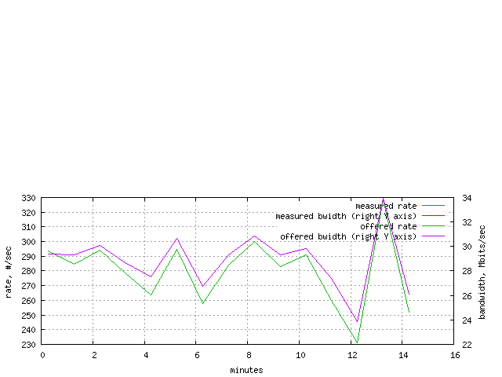
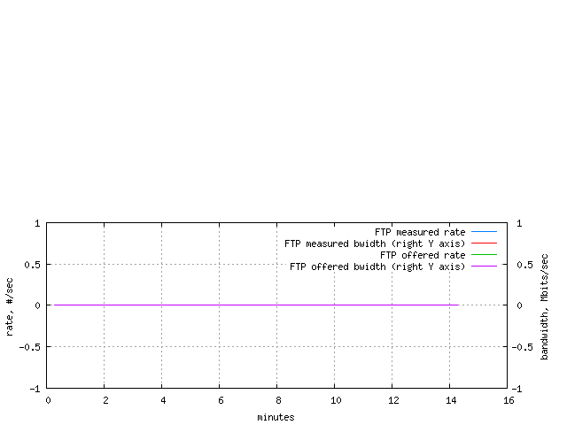

This information is based on the client-side measurements.
| load trace |
|---|
|  |
The load table shows offered and measured load from client side point of view. Offered load statistics are based on the request stream. Measured load statistics are based on reply messages. The 'count' column depicts the number of requests or responses.
The 'volume' column is a little bit more tricky to interpret. Offered volume is reply bandwidth that would have been required to support offered load. This volume is computed as request rate multiplied by measured mean response size. Measured volume is the actual or measured reply bandwidth.
| SSL load trace |
|---|
The SSL load table shows offered and measured load from client side point of view. Offered load statistics are based on the request stream. Measured load statistics are based on reply messages. The 'count' column depicts the number of requests or responses.
The 'volume' column is a little bit more tricky to interpret. Offered volume is reply bandwidth that would have been required to support offered load. This volume is computed as request rate multiplied by measured mean response size. Measured volume is the actual or measured reply bandwidth.
| FTP load trace |
|---|
|  |
The FTP load table shows offered and measured load from client side point of view. Offered load statistics are based on the request stream. Measured load statistics are based on reply messages. The 'count' column depicts the number of requests or responses.
The 'volume' column is a little bit more tricky to interpret. Offered volume is reply bandwidth that would have been required to support offered load. This volume is computed as request rate multiplied by measured mean response size. Measured volume is the actual or measured reply bandwidth.
| Stream | Contribution | Rates | Totals | |||
|---|---|---|---|---|---|---|
| Count (%) |
Volume (%) |
Count (xact/sec) |
Volume (Mbits/sec) |
Count (xact,M) |
Volume (Gbyte) |
|
| "some-content" response | 100.00 | 100.00 | 279.90 | 28.91 | 0.24 | 3.02 |
| all response content types | 100.00 | 100.00 | 279.90 | 28.91 | 0.24 | 3.02 |
| misses | 100.00 | 100.00 | 279.90 | 28.91 | 0.24 | 3.02 |
| hits and misses | 100.00 | 100.00 | 279.90 | 28.91 | 0.24 | 3.02 |
| cachable | 79.74 | 79.70 | 223.20 | 23.04 | 0.19 | 2.40 |
| not cachable | 20.26 | 20.30 | 56.70 | 5.87 | 0.05 | 0.61 |
| cachable and not | 100.00 | 100.00 | 279.90 | 28.91 | 0.24 | 3.02 |
| fill | 79.74 | 79.70 | 223.20 | 23.04 | 0.19 | 2.40 |
| all replies | 100.00 | 100.00 | 279.90 | 28.91 | 0.24 | 3.02 |
| no auth | 100.00 | 100.00 | 279.90 | 28.91 | 0.24 | 3.02 |
No events observed for the following statistics: "foreign" response, "bodiless" response, "unknown" response, hits, ims/200, ims/304, all ims, FTP active, FTP passive, FTP all modes, reload, range, abort, redirected request, reply to redirect, HEAD, POST, PUT, CONNECT, all non-gets, page, useful proxy validations, useless proxy validations, all proxy validations, SOCKS hits, SOCKS misses, SOCKS hits and misses, SSL hits, SSL misses, SSL hits and misses, FTP hits, FTP misses, FTP hits and misses, all auth, tunneled, custom.
The 'Reply stream' table provides count and volume statistics for many classes of transactions and for so-called pages. The 'Contribution' columns show count- and volume-based portions of all transactions. The 'Rates' columns show throughput and bandwidth measurements. The 'Totals' columns contain the total number of transactions and the total volume (a sum of individual response sizes) for each stream.
Note that some streams are a combination of other streams. For example, the 'all ims' stream contains transactions with If-Modified-Since requests that resulted in either '200 OK' (the 'ims/304' stream) or '304 Not Modified' (the 'ims/304' stream) responses.
Many combination streams, such as 'all content types' or 'hits and misses' stream, contribute less than 100% because properties like content type or hit status are distinguished for 'basic' transactions only. A basic transactions is a simple HTTP GET request resulted in a '200 OK' response. Various special transactions such as IMS or aborts do not belong to the 'basic' category.
The 'Reply object' table contains corresponding response time and size statistics for streams.
A similar table covering request messages is available elsewhere.